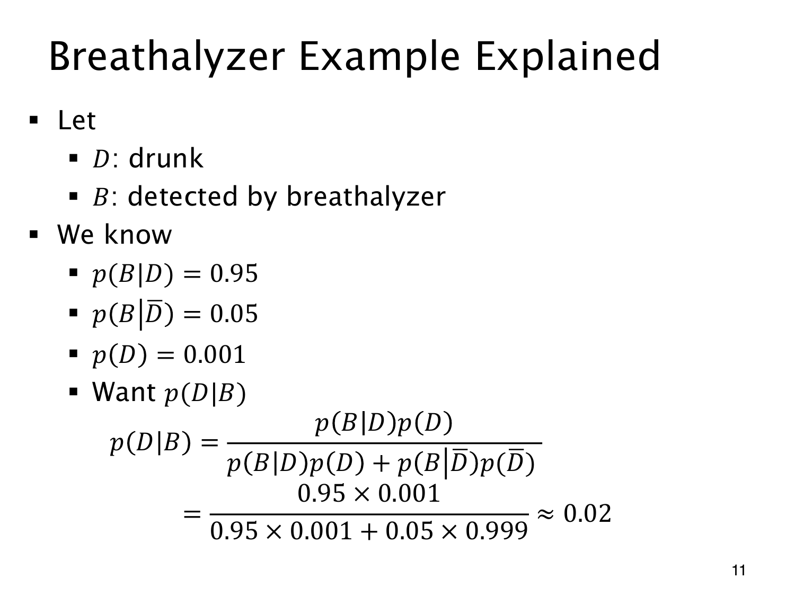

L1.10 · 第 11 页讲解原文
查看这一页课件

酒精检测中的分母
用 D 表示实际醉酒，B 表示检测阳性。课件模型给出
p(B∣D)=0.95,p(B∣D)=0.05,p(D)=0.001,p(D)=0.999.
醉酒且阳性的联合概率为 0.001×0.95=0.00095，清醒却阳性的联合概率为 0.999×0.05=0.04995。两类互斥，合起来就是全部阳性，故 p(B)=0.05090，从而
p(D∣B)=0.050900.00095≈0.018664.
这约为 1.87%，课件取约 2%。0.95 与 0.05 分别属于两种真实状态，不能在分母中直接相加；每一项都要先乘相应司机群体的先验比例。
阳性使醉酒概率从原来的 0.1% 上升到约 1.87%，确实更新了判断，却没有达到 95%。计算时保留中间精度，最后再舍入；2% 是近似值。